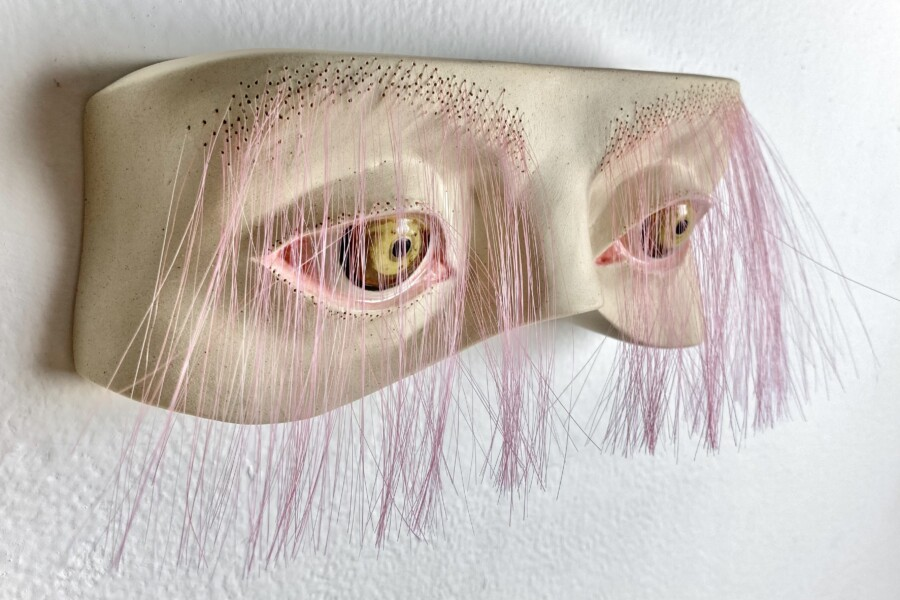

Marina Kuchinski: Close to the Ground
The Art & Design Department of South Suburban College is pleased to announce Close to the Ground, an exhibition of mixed media sculpture, ceramics, and installations by Chicago-based artist Marina Kuchinski. Close to the Ground is on display in the Lee E. Dulgar Gallery and will remain on view until May 7, 2026.
Marina Kuchinski is a visual artist and educator based in the Chicago area. Her work encompasses sculpture, ceramics, mixed media and installation. She primarily handbuilds and sometimes slip-casts animal and human forms. Through various bodies of work, she explores the intersection of animality, humanity, and objecthood—inviting viewers to contemplate boundaries between species and social constructs. Her figurative forms, deeply rooted in posthumanist and feminist ecological thought, provoke reflection on the process of transformation and the shared vulnerability of living beings.
Special Events:
Coinciding with this exhibition will be a live artist demo and artist reception held on Wednesday, April 15. The live demo will take place in the Ceramics Studio (Room 4348) located on the 4th floor of the South Suburban College Main Campus. The artist will demonstrate her process in sculpting an animal head using the solid clay construction method. Following the demo, visitors are invited to attend the artist’s reception from 11 a.m. to 12:30 p.m. in the Lee E. Dulgar Gallery where they can view completed versions of the work that was demonstrated.
The Lee E. Dulgar Gallery is open Monday–Wednesday, 10 a.m. – 4 p.m. The galleries are closed on weekends and holidays.
Image:
Turned Slightly Pink (2024)
Stoneware, underglaze, glaze, synthetic hair.